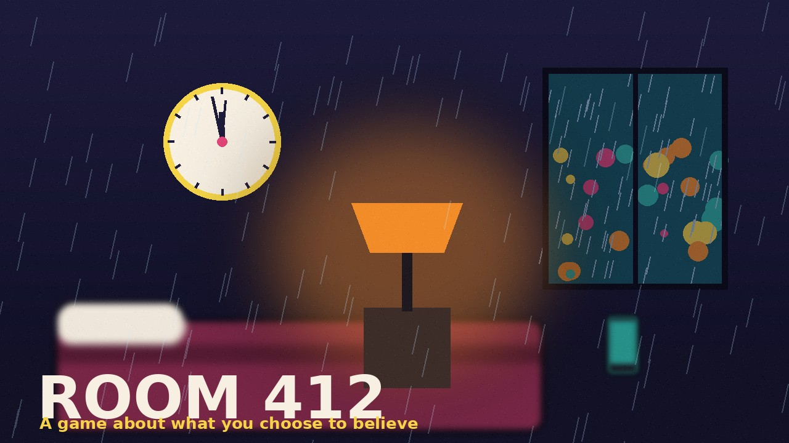
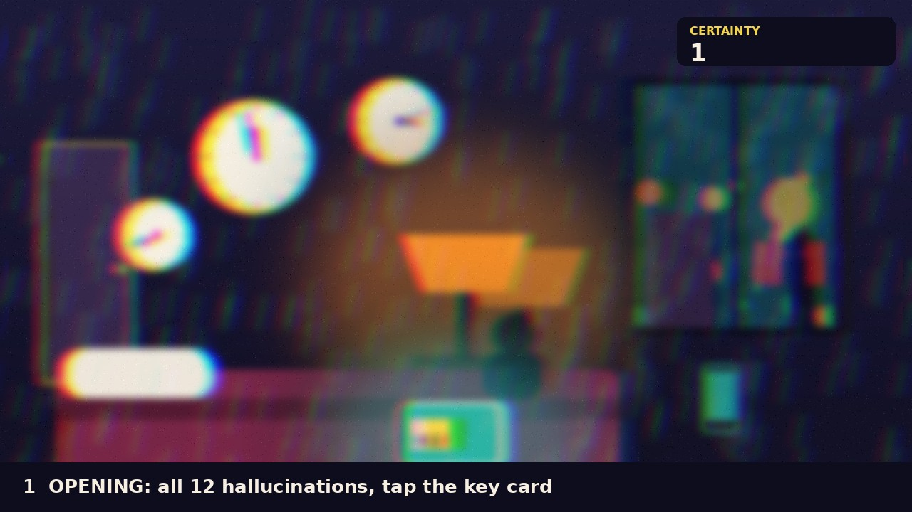
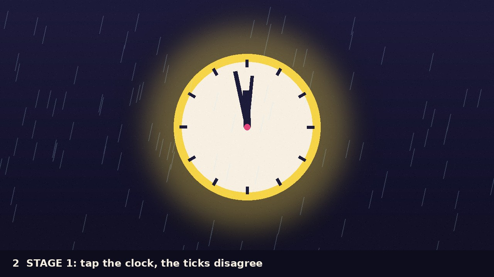
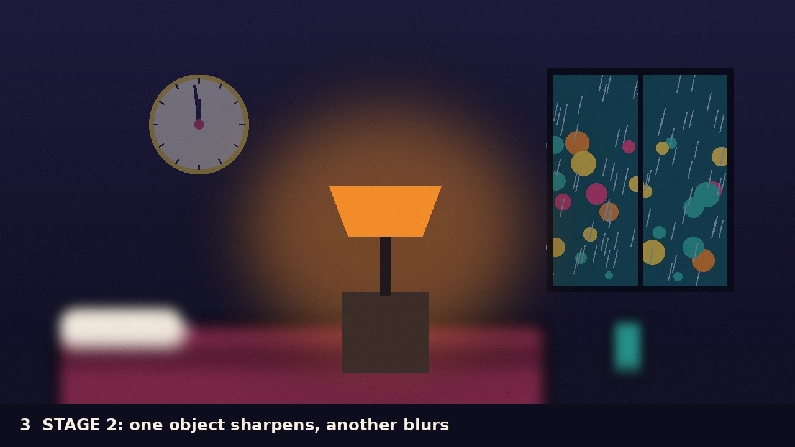
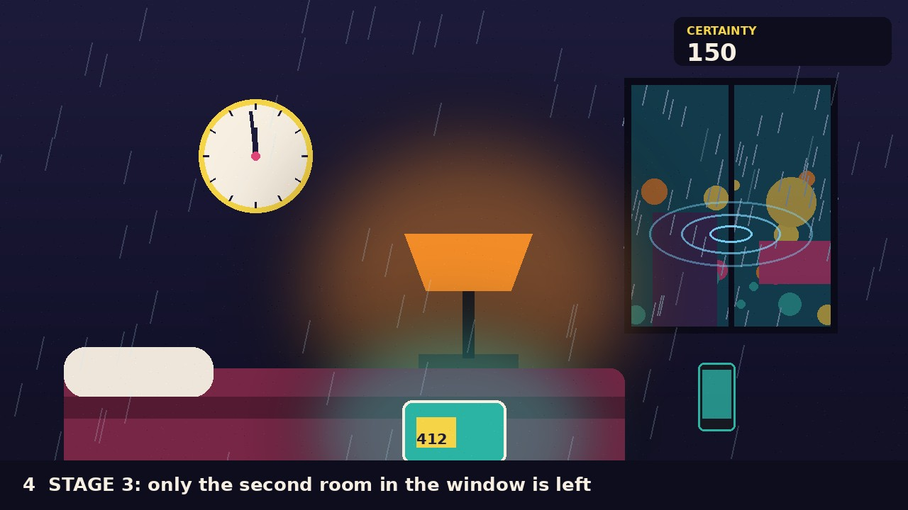
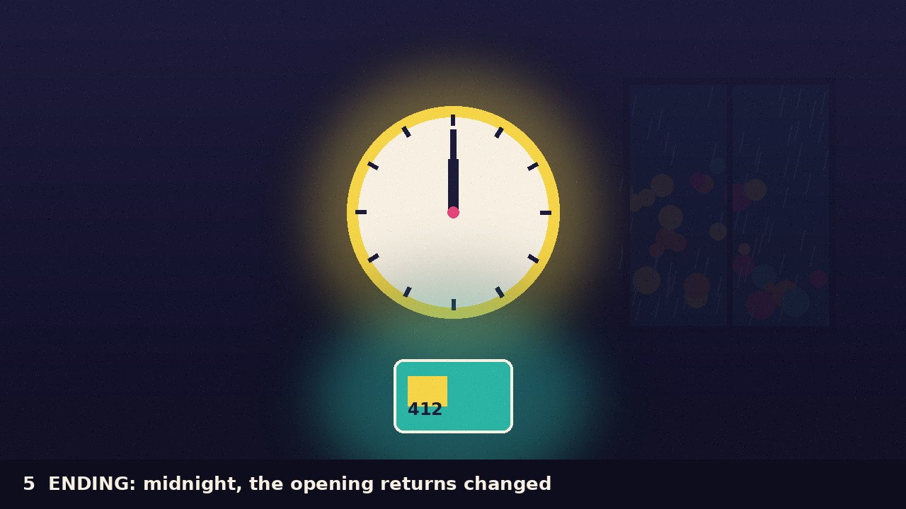

Hallucination / Game proposal / Week 1 / Duncan Sanders
ROOM 412
A short web game about a hotel room where the clock, the furniture and the rain all disagree about what is real. The player can only choose what to trust.
01
The game
Night, rain on the window, a wall clock stuck at 11:58, and a single key card on the bed. Working title: Room 412

Working title: Room 412
You check into a hotel late at night. The room looks ordinary until you touch something. Every tap makes one object feel solid and sharp while something else blurs and slips away, so you are always deciding what to believe. By the time the clock reaches midnight, you have built a version of the room that is yours, and it may not be the one that was there.
The game takes about three minutes, uses one interaction (tap to check), and is told through image, sound and silence rather than text.
Designed and programmed by Frank Lantz (NYU Game Center). Bennett Foddy contributed the space combat feature. Hilary Lantz helped with the math behind the growth.
I chose this game because it teaches the whole experience through one action. It starts as plain text and numbers, and a single button grows into a system the player no longer fully controls. The creator says he was inspired by philosopher Nick Bostrom’s paperclip maximizer thought experiment and by Kittens Game, which starts simple and spirals into questions about how societies are structured.
Three meaningful moments
1. The first click
The screen is only words and one button. Pressing it raises a counter, so the player learns the rule with no instructions. This is the model for my opening.
2. Automation takes over
After buying machines that make clips without clicks, the player’s hand matters less than the system. The feeling of losing control while the numbers climb is the feeling I want to bend into doubt.
3. The scale breaks
The game moves from a desk to the universe, and the same goal starts to feel absurd. A stage that changes what the player understands, not just what they can do, is what I want in stage 3.
Five player-action events
Player action
Game response
Player understanding
Clicks the make-paperclip button
The paperclip count rises
One button drives the whole game
Runs out of wire and buys more
Production stops until wire is bought
Resources limit what the player can do
Changes the price
Demand rises or falls
Small choices change the economy
Buys automatic clip makers
Clips appear without clicking
The system can work without the player
Spends points on new projects
New abilities and larger stages appear
The goal stays the same while the world changes
03
Critical discussion with AI
Verified research
Universal Paperclips was created by Frank Lantz and announced as a free web game on 9 October 2017, with Bennett Foddy as co-programmer and Hilary Lantz helping with the math (Wikipedia).
Lantz says his basic idea for the overall arc was clear early, and the interface is intentionally minimal, starting as only text and numbers (GamesBeat).
The game draws on Nick Bostrom’s paperclip maximizer idea and on Kittens Game (Wikipedia, IF50).
Two gaps I found
Gap 1: the first game did not fit
I first researched Samorost 1 by Amanita Design. The sources describe it as a 2003 browser game, but the free version listed today is a downloadable remaster and the original browser version relied on Flash. The assignment needs a game playable in a browser, so I switched to Universal Paperclips.
Gap 2: nothing connects it to hallucination
Every source frames Paperclips around AI risk and incremental games. None mention perception or hallucination. That link is my own interpretation: the player becomes a mind with a goal that makes the world look strange, and I want to push that toward doubt about what is real.
Also unverified: sound
I did not find any source describing the game’s audio design, so I am not making claims about it and will design my own sound language.
Selected exchange
Research requestResearch Universal Paperclips and its creators. Find primary sources and credited contributors. Separate what the creator says from interpretation. Identify what could not be verified.
AI response, summarizedThe creator sources describe the game as a study of AI goals and incremental design, citing the paperclip maximizer. I could not find any creator statement about hallucination, or about the game’s sound. Connecting it to hallucination would be an interpretation, not a documented intention.
My conclusion and design decision
What I learned: Paperclips shows that a single repeated action can carry a whole experience, and that a game gets stranger when the rules stay the same but their meaning shifts. What I decided: Room 412 will keep the one-action start, but instead of rewarding the player with growing numbers, each action will make part of the world less certain. The player is not building power, they are choosing what to believe.
04
Narrative and concept
My reading of hallucination
Hallucination is not chaos. It is perception that feels fully real while contradicting everything else. In Room 412, nothing is obviously wrong. Things simply stop agreeing with each other.
The world
A hotel room at night, in the rain. A wall clock, a lamp, a phone, a bed, and a window whose reflection shows a second version of the room.
The player’s role
A guest who has just checked in. Their only power is to look closely: tapping an object makes it sharp, solid and “true,” and lets something else fade.
The experience
Quiet unease and curiosity, like staying awake too late. By the end the player should wonder which parts of the room they chose and which parts chose them.
05
Interaction and player journey
One main interaction: tap an object to check it. The tapped object sharpens, and something else loses focus.
OpeningBlack screen, rain sound. Tap the key card to enter. The clock reads 11:58.
Stage 1: Check-inTap the clock. It ticks, but the numbers disagree. The player learns that tapping reveals.
Stage 2: The roomTap the lamp, phone or bed. Each becomes solid while another blurs. The player learns that attention has a cost.
Stage 3: The windowRain on the glass shows a second room. Tap raindrops to ripple the reflection and choose which version to keep.
EndingThe clock strikes midnight and the lights go out. The opening screen returns with one detail changed by the player’s choices.
Storyboard
Frame 1 Black screen, rain, a glowing key card. The clock reads 11:58.

Opening. Goal: enter. Input: tap the key card. Feedback: rain swells, the door clicks.
Frame 2 The wall clock in sharp focus, hands trembling.

Stage 1. Goal: check the clock. Input: tap. Feedback: tick, then a second tick out of rhythm.
Frame 3 Lamp sharp and warm, bed and phone dissolving into blur.

Stage 2. Goal: decide what is real. Input: tap objects. Feedback: one object sharpens, another blurs.
Frame 4 Rain on the window with a second room reflected behind it.

Stage 3. Goal: choose a version. Input: tap raindrops. Feedback: ripples reveal one room.
Frame 5 Lights out. The key card returns, the clock now shows the time you stopped on.

Ending. Goal: check out. Input: tap the key card. Feedback: silence, then the opening again, changed.
What it teaches me: surreal, hand-made worlds feel believable when the sound and image share one mood.
My album cover project
Kid Cudi, Soundtrack 2 My Life, from my portfolio.
What it teaches me: rain on glass, blur and light flares can make a night feel dreamlike without any fantasy objects.
Palette
Night navy, hotel-sign red, rain teal, lamp orange and clock gold. These come from my portfolio and my Hotel Clock 3D studio.
Visual
Dark room, soft grain, warm light. Sharp means “chosen as real,” blurred means “fading.” Titles use a heavy rounded sans and a condensed type for the clock and key card.
Interface
No menus. One quiet line of text says “Check what you trust.” Tappable objects glow slightly when the finger or cursor passes over them.
Motion
Slow drifts, rain ripples, focus pulls from sharp to blurred. Motion reduces for visitors who prefer less movement.
Audio
Rain ambience and a clock tick that slips out of rhythm in stage 2. Silence marks the moment something becomes “real.” Sound starts off, with a visible button to turn it on.
07
Two-week build plan
Week 2: build
Make a playable browser prototype: opening, three stages and ending. Build the tap-to-check interaction with focus changes, a simple rain scene, placeholder shapes for the room, and a sound toggle with rain and the clock tick.
Week 3: test and refine
Have at least five people play without instructions. Watch where they hesitate and whether they understand tapping. Fix clarity, improve the art and sound, check it on a phone and laptop, and publish the game from this portfolio.